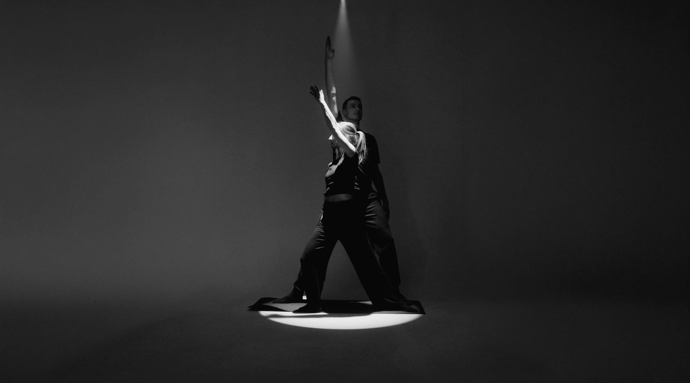
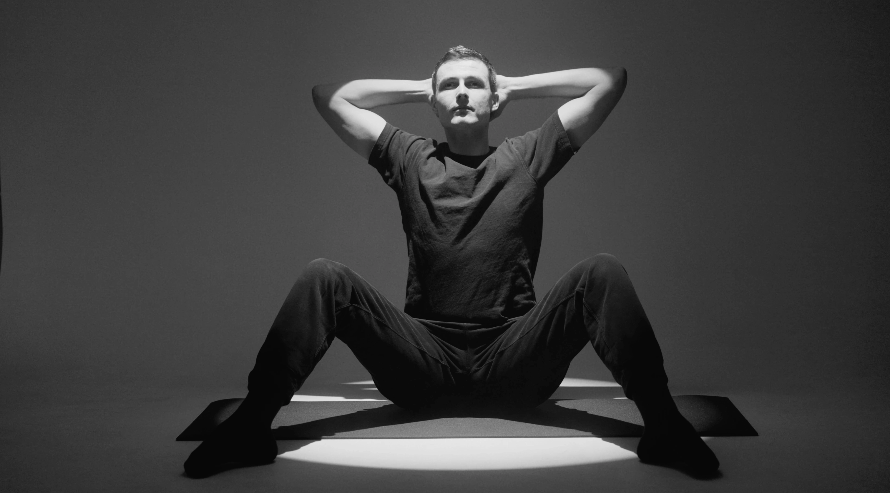
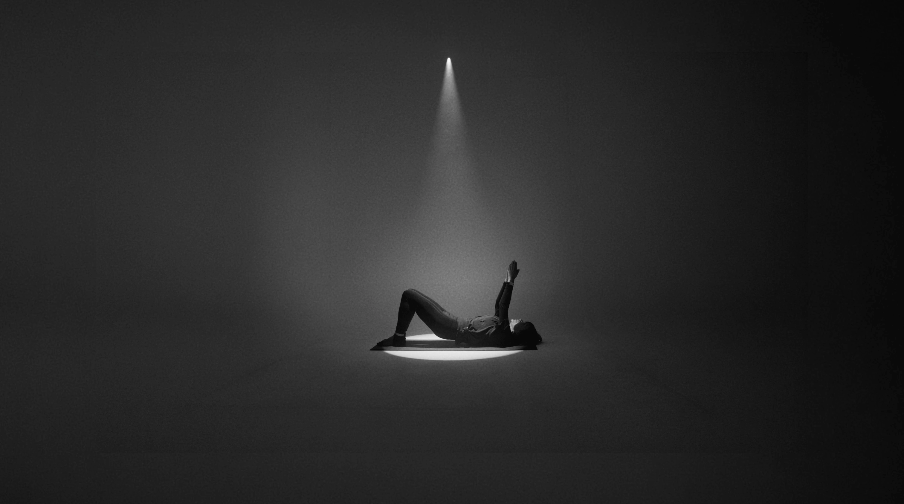
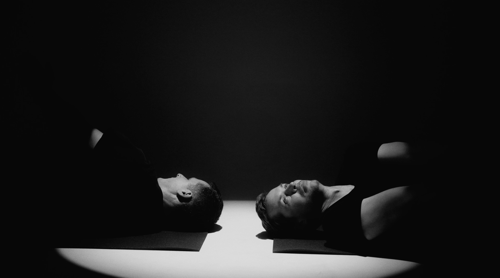

Tělo jako partner
Cesta k plnému využití vašeho tělesného potenciálu bez zbytečné kompenzace. Navrženo pro herce, tanečníky, hudebníky a sportovce, kteří se svým tělem pracují profesionálně a vyžadují jeho ladnou, bezchybnou koordinaci.

Hrajete či sportujete přes bolest?
Vnímáte chronickou bolest, svalové napětí nebo ztuhlost jako nutnou, nevyhnutelnou daň za vrcholový umělecký či sportovní výkon?
Stagnujete i přes veškeré úsilí?
Narazili jste na výkonnostní strop? Máte pocit, že čím více silou trénujete, tím menší pokrok přichází a tělo se spíše unavuje?
Rádi byste si prodloužili kariéru?
Trápí vás jednostranné zatížení pramenící z vaší profese a máte podvědomý strach z vážného zranění, které by vás vyřadilo z provozu?
Co profesionálové
oceňují nejvíc?
Pro lidi pracující na hranici tělesných možností není Feldenkraisova metoda relaxací — je to klíčový upgrade vnímání a svalové souhry. Zde jsou body, které naši klienti z řad profesionálů uvádějí nejčastěji.
Detekce a vypnutí parazitního napětí
Zjistíte, které svalové skupiny zapojujete zcela zbytečně. Například zatínání čelistí, ramen či břicha při jednoduché rotaci pánve. Vypnutím tohoto nevědomého „šumu“ uvolníte obrovské množství energie a tělesného tlaku.
Rozlišení mikropohybů
(kinestetická citlivost)
Zatímco běžné tréninky pracují s velkými svalovými skupinami, my zjemňujeme rozlišovací schopnost nervové soustavy. Schopnost vnímat rozdíly v milimetrech a gramech tlaku přináší chirurgickou přesnost, plynulost a lehkost při výkonu.
Aktivní parasympatická obnova
(reset systému)
Metoda uvádí mozek a tělo do hlubokého klidu (vln alfa/theta). Tento stav hlubokého uvolnění nervové soustavy tlumí chronickou únavu, okamžitě snižuje napětí tkání a dramaticky urychluje hojení mikrotraumat a regeneraci po tréninku.
Optimalizace kloubního přenosu sil
Naučíte se rozkládat váhu a odpor celým skeletem, namísto abyste veškerou zátěž kompenzovali izolovanými svaly či vazy. Síla se přenáší plynule od opory nohou až po konečky prstů, což chrání klouby a šlachy před opotřebením.
Proč je Feldenkraisova metoda
klíčem k vašemu výkonu?

Maximální efektivita
skrze minimální úsilí
U profesionálů není problém v nedostatku svalové síly, ale v přítomnosti parazitního napětí. Svaly, které by měly odpočívat, neustále pracují nevědomky proti sobě. To dramaticky zvyšuje spotřebu energie a únavu.
Metoda učí vaši nervovou soustavu provádět i ty nejnáročnější biomechanické úkoly s minimálním úsilím. Výsledkem je vyšší přesnost v detailu, dokonalá koordinace a udržitelnost výkonu bez vyčerpání.

Prevence zranění
a strukturální obnova
Opakováním asymetrických stereotypů pod vysokým tlakem riskujete zranění, které může ohrozit vaši kariéru.
Zkoumáním pohybu reorganizujete svalové řetězce tak, aby se síla optimálně přenášela přes kostru, nikoliv přes přetížené měkké tkáně, klouby a šlachy. Tělo začne fungovat jako dokonale integrovaný a plynulý celek.
Víme, jaké to je pracovat na hranici tělesných možností pod tlakem okolí.
Lenka jako diplomovaná fyzioterapeutka dokáže provést přesnou klinickou a anatomickou analýzu vašich svalových dysbalancí, asymetrií či starých poúrazových kompenzací. Rozumí exaktní kloubní biomechanice a patologii těla.
Zároveň jako profesionální tanečnice chápe specifické nároky, které na své tělo kladou umělci, sportovci a lidé, pro které je tělo hlavním vyjadřovacím i pracovním nástrojem. Zná tlak na výkon i únavu po hodinách náročných zkoušek.
„S Lenkou získáte průvodkyni, která mluví jazykem klinické fyzioterapie i čistého jevištního či sportovního vyjádření.“Vědět více o lektorce →

Posuňte svůj
výkon dál
Zaujala vás Feldenkraisova metoda, potřebujete zkonzultovat své limity nebo se chcete doptat na volný termín? Ozvěte se nám.
Spojte se s námiNejčastější otázky
Pomáhá odhalit parazitní napětí, které nevědomky spotřebovává energii. Zpřesněním kinestetické citlivosti získáte větší plynulost, lehkost při složitých technických pasážích a dokonalý přenos sil skrze kostru bez přetěžování kloubů.
Pro hlubokou integraci nových vzorců doporučujeme lekci 1–2× týdně. Lze je skvěle kombinovat s vaším stávajícím tréninkem či zkouškovým plánem, neboť metoda tělo nevyčerpává, ale naopak regeneruje.
Ano. Metoda učí mozek obcházet poškozené struktury a kompenzovat je zapojením celého tělesného systému, čímž se urychluje rehabilitace a zabraňuje se vzniku nových asymetrických zlozvyků.